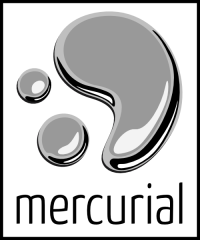

Versijų kontrolės sistema – Mercurial
Pirmiausia nežinantiems, trumpai apie tai, kas yra versijų kontrolės sistema. Tai programinė įranga, kurios pagalba galima išsaugoti daug skirtingų failo versijų. Tai reiškia, kad pakeitę failą, galite užfiksuoti pakeitimą, nurodydami ką ir kodėl keitėte. Vėliau, bet kada galėsite peržiūrėti ir atstatyti tuos pakeitimus. Tokias sistemas daugiausiai naudoja programuotojai, nes jie keičia daug failų ir nori žinoti kas kada ir kodėl buvo pakeista. Versijų kontrolės sistemos taip giliai įaugo į programavimo procesą, kad failų versijos naudojamos labai plačiai, pavyzdžiui programuotojo našumui apskaičiuoti. Tačiau failų versijų sekimas aktualus ne tik programuotojams…
{kind=link}
Jau senai planavau visus savo konfigūracinius failus patikėti versijų kontrolės sistemai, buvo bandymų daryti tai su Subversion, tačiau jis nėra toks lankstus, galiausiai išbandžiau Mercuriai, kuris gerokai pranoko mano lūkesčius. Pasidalinsiu patirtimi kaip sekėsi tai daryti. Kadangi kompiuteris bet kada gali sugesti ir sugadinti duomenis, tai patikimiau svarbius duomenis saugoti ne vienoje vietoje. Be to, tuos pačius konfigūracinius failus naudoju ne viename kompiuteryje. Tam reikalui puikiai tinka bitbucket.org svetainė, kurioje galima talpinti iki 150 Mb duomenų. Susikūrus naują repozitoriumą atsisiunčiu jį į savo kompiuterį, pradžiai į laikiną katalogą:
$ cd /tmp $ hg clone http://bitbucket.org/sirex/home/
CVS turi bjaurų įprotį kiekviename kataloge prišiukšlinti paliekant ‘CVS’ katalogą, Subversion daro laba panašiai, tik katalogas vadinasi ‘.svn’, tuo tarpu Mercurial viską saugo tik viename kataloge pavadinimu ‘.hg’, kuris yra šakniniame repozitoriumo kataloge. Jokių šiukšlių, esant reikalui labai patogu perkelti versijų informaciją į kitą vietą, taip ir padarykime… Kadangi turiu tuščią repozitoriumą, tai galima perkelti versijų informaciją į mano namų katalogą:
$ cd ~ $ cp -r /tmp/home/.hg .hg
Mercurial neprisiriša prie konkretaus kelio failų sistemoje, todėl galima sau leisti improvizuoti ir dažniausiai įvairios improvizacijos pasiteisina.
Mano namų katalogas jau globojamas VKS, tačiau į ją dar niekas neįkelta.
Kadangi noriu įkelti tik tam tikrus failus, tai galiu nurodyti faile
.hgignore, štai failo turinys:
syntax: regexp ^(?!\.hgrc|\.hgignore)
Pirmoji eilutė nurodo, kad ignoruojamiems failams aprašyti bus naudojamas regexp. Kol kas nurodau, kad bus versijuojami tik .hgrc ir .hgignore failai. Įkeliame juos į repozitoriumą ir nusiunčiame visus pakeitimus į bitbucket.org serverį:
$ hg add $ hg ci -m "Pradinis įtraukimas." $ hg push
Dabar bet kuriame kitame kompiuteryje galiu atsisiųsti savo konfigūracinius failus:
$ hg clone http://bitbucket.org/sirex/home/ /tmp/home $ cp -r /tmp/home/.hg ~/.hg
O vėliau atsinaujinti, jei kažką keičiau:
$ hg pull $ hg up
Kol kas esu įtraukęs tik Mercurial ir Vim konfigūracinius failus, vėliau reikės įtraukti daugiau. Viskas guli čia: